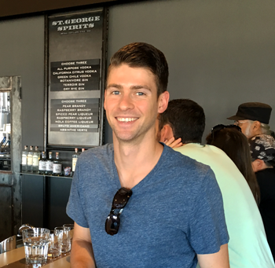

About CP Designs
CP Designs exists to build creative artistic solutions for numerous situations.
Who I am - Chris Polishak
 I am a Graphic Designer and burgeoning Full Stack Developer based in Texas. I have an affinity for the creative and beautiful (that should be a soap opera name!). I have over 7 years experience doing freelance Graphic Design and digital artwork utilizing Adobe Photoshop and Illustrator. I also enjoy making traditional media art for home decor as well as design for apparel.
Most of my work previously was for myself, friends or organizations. But I decided to take a stab at trying to make some money with my artistic talents in 2018 and finally landed my first official design on Bucketfeet.com for some sweet kicks. It was after this success that I decided I would start a portfolio online to showcase my works and to offer my services to others.
I am currently learning to design, develop, test and deploy front-end, back-end, database and services in the cloud using highly sought after technologies. I am studying to design and build backend systems including SQL database schemas, RESTful APIs and services. And I am also learning how to work in a multi-developer team, using tools like Git, Github and Atlassian Jira. This includes sound proficiency in the following:
- HTML 5
- CSS
- JavaScript
- Linux
- Node.js
- Express.js
- ReactJS
- MongoDB
- JQuery
- SQL
- AWS
- Git and Github